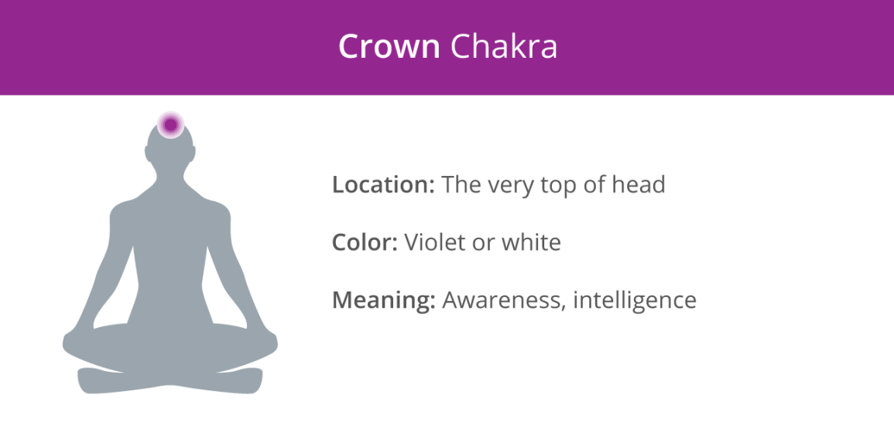
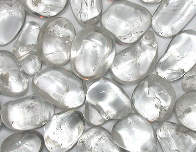
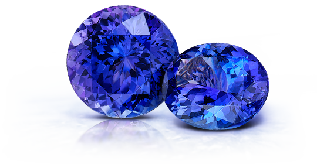
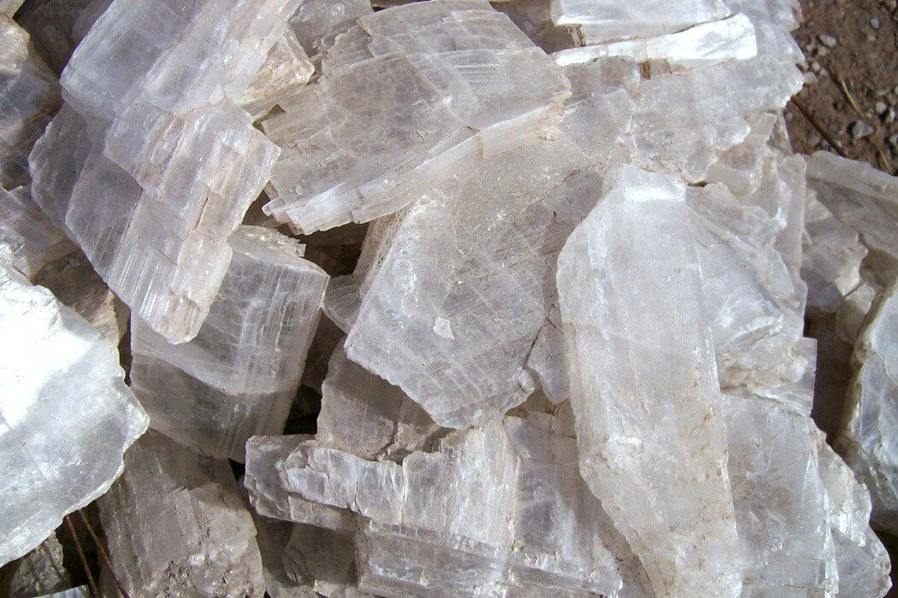

Crown Chakra

Image from https://www.thebluebudha.com.au/shop/tumbled-gemstone-clear-quartz/
The crown chakra, located at the top of the head, is associated with knowledge, consciousness, fulfillment, and spirituality.
The main colour of the crown chakra is violet and white (or clear):
1. Clear Quartz

Image from https://blog.sivanaspirit.com/10-spiritual-benefits-amethyst/
Assists in:
- Meditation
- Expansion of consciousness
- Communication with guides
- Past-life recall
- Attracting love and prosperity
- Absorbing negative energy
- Concentration
- Memory
Known as the 'master healing crystal' symbolising the absolute white light of creation, Clear Quartz has the potential to balance and integrate all of our energy centres.
It also brings clarity to our mind by filtering out all unnecessary distractions.
2. Tanzanite

Image from https://www.shimansky.co.za/articles/tanzanite-the-december-birthstone
Assists in:
- Expansion of consciousness
- Spiritual awareness
- Meditation
- Manifesting wealth and prosperity
- Focus
- Psychic abilities
An extremely rare and valuable gemstone, Tanzanite strengthens the entire chakra system healing process.
It also increases our manifestation powers.
3. Selenite

Image from https://www.energymuse.com/blog/selenite-healing-crystal
Assists in:
- Meditation
- Spiritual work
- Absorbing negative energy
- Focus
- Mental clarity
- Communication with guides
- Relieving stress and anxiety
A crystal that purifies the light within our aura, Selenite connects us with our higher self and our guardian angels – it has the potential to open channels into higher realms and connect us with the divine.
Producing a calming effect, it also a great stone to meditate with.
[Information adapted from https://7chakrastore.com/blogs/news/chakra-stones]